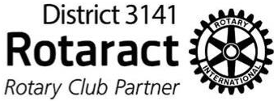

About US
About Us
Rotaract club of S.P.I.T. is an institution based rotaract club belonging to Rotaract district 3141. It is sponsored by the Rotary Club of Mumbai Juhu. The club was chartered in the year 2012. We promote the holistic development of every individual who is working for the betterment of the society. We do qualitative projects in order to ensure that we provide maximum service to our society as a whole
Who we are?
Together, we see a world where people unite and take action to create lasting change — across the globe, in our communities, and in ourselves.
People Of Action
We connect passionate people with diverse perspectives to exchange ideas and above all, take action to change the world.
Community Builders
We collaborate with leaders and organisations who want to get to work on projects that have a real, lasting impact on people’s lives.
Problem Solvers
Together, we apply our professional experience and personal commitment to tackle our communities’ most persistent problems, finding new, effective ways to enhance health, stability, and prosperity across the globe..
Opportunity Creators
We create opportunity for people who want to give it back to the society or looking for investing in our communities today for a better tomorrow
2012
Since We Started
5000
Number Of Volunteers
Meet Our Team
With the guidance of our parent rotary the new elected team of RC SPIT are on a mission to enable the community to advance world understanding, goodwill, and peace through the improvement of health, the support of education, and the alleviation of poverty.
Dr S S Rathod
Club Mentor
Rtr. Atman Ainapure
President

Rtr. Alisha Kadam
Vice President
Rtr. Yash Jain
IPP
Our Parent Rotary
Who are they
- They belong to the district 3141 and called our parent rotary
- Chartered on Dec.22,1999
- Over 20 core members
- A parent club to more than 10 different clubs
- Driven by the goal of uplifitng the community
Their Mission
- Support the member clubs in fulfillin gthe Object of rotary by fostering unity amongest member clubs
- Strengthing and expanding Rotary around the world
- Communicating worldwide the work of rotary and providing a system of International Administration
Their Events
- Sanskar- Training program for interactors and moderators
- Udaan-Interact Distrcit Conference
- Umang-Trekking for visually and physically challenged
- Social media integration
What our past leaders say
Rtr. Samveg Shah
Director Of Marketing
Before being a good engineer it is important being a good human being and the Rotaract Club of SPIT has taught us the importance of giving it back to the society
Rtr. Samveg Shah
Director Of Marketing
Before being a good engineer it is important being a good human being and the Rotaract Club of SPIT has taught us the importance of giving it back to the society
Rtr. Samveg Shah
Director Of Marketing
Before being a good engineer it is important being a good human being and the Rotaract Club of SPIT has taught us the importance of giving it back to the society
Rtr. Samveg Shah
Director Of Marketing
Before being a good engineer it is important being a good human being and the Rotaract Club of SPIT has taught us the importance of giving it back to the society
Check Out Our Events

Blood Donation Camp
Blood Donation Camp was organized by 6 Rotary Clubs (JVPD Mumbai, Bombay Juhu Beach, Mumbai Juhu, Mumbai Divas, Mumbai Green City, Mumbai Versova, Mumbai North West Malad) and their Rotaracts.162 Bottles of Blood were collected ( Highest no. of blood bottles at one location this year.
Blood Donation Camp
Blood Donation Camp was organized by 6 Rotary Clubs (JVPD Mumbai, Bombay Juhu Beach, Mumbai Juhu, Mumbai Divas, Mumbai Green City, Mumbai Versova, Mumbai North West Malad) and their Rotaracts.162 Bottles of Blood were collected ( Highest no. of blood bottles at one location this year.
Blood Donation Camp
Blood Donation Camp was organized by 6 Rotary Clubs (JVPD Mumbai, Bombay Juhu Beach, Mumbai Juhu, Mumbai Divas, Mumbai Green City, Mumbai Versova, Mumbai North West Malad) and their Rotaracts.162 Bottles of Blood were collected ( Highest no. of blood bottles at one location this year.
Blood Donation Camp
Blood Donation Camp was organized by 6 Rotary Clubs (JVPD Mumbai, Bombay Juhu Beach, Mumbai Juhu, Mumbai Divas, Mumbai Green City, Mumbai Versova, Mumbai North West Malad) and their Rotaracts.162 Bottles of Blood were collected ( Highest no. of blood bottles at one location this year.
Flagship Events

Cleanathon
On the occasion of 150th Birth Anniversary of Mahatma Gandhi, RC S.P.I.T. was a part of the Cleanathon 2019 under the Swachh Bharat Abhiyan.The event was held in the areas of Dadar, Parel and Lalbaug.One volunteer with a resembling ‘poshak’ of Mahatma Gandhi led the rally in these areas.No of Volunteers who were a part of this project: 600 (25 from RC S.P.I.T.)
Cleanathon
On the occasion of 150th Birth Anniversary of Mahatma Gandhi, RC S.P.I.T. was a part of the Cleanathon 2019 under the Swachh Bharat Abhiyan.The event was held in the areas of Dadar, Parel and Lalbaug.One volunteer with a resembling ‘poshak’ of Mahatma Gandhi led the rally in these areas.No of Volunteers who were a part of this project: 600 (25 from RC S.P.I.T.)
Cleanathon
On the occasion of 150th Birth Anniversary of Mahatma Gandhi, RC S.P.I.T. was a part of the Cleanathon 2019 under the Swachh Bharat Abhiyan.The event was held in the areas of Dadar, Parel and Lalbaug.One volunteer with a resembling ‘poshak’ of Mahatma Gandhi led the rally in these areas.No of Volunteers who were a part of this project: 600 (25 from RC S.P.I.T.)